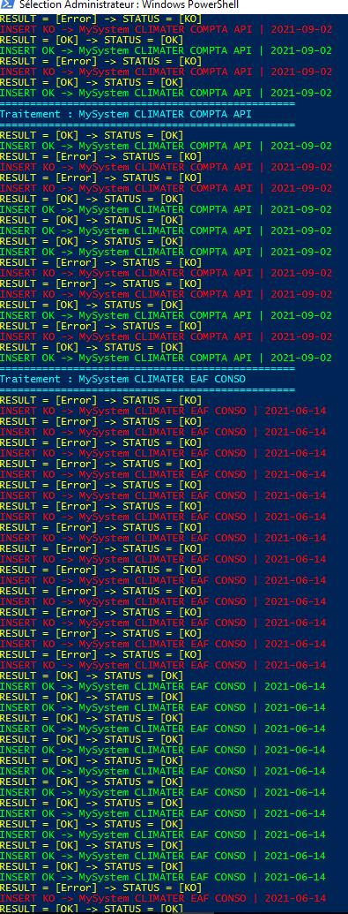
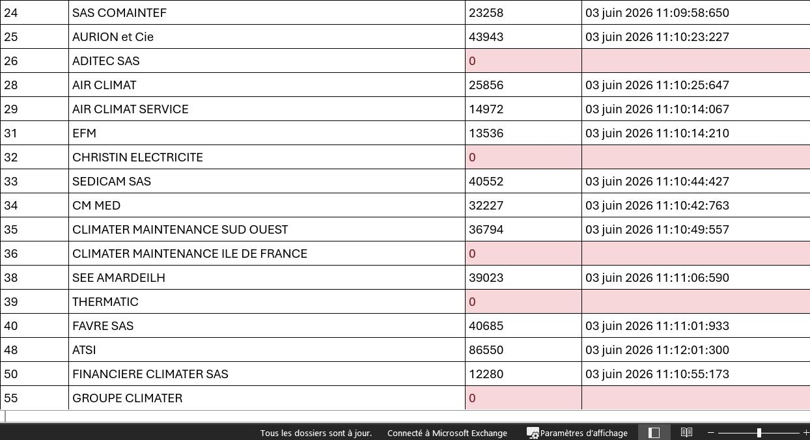
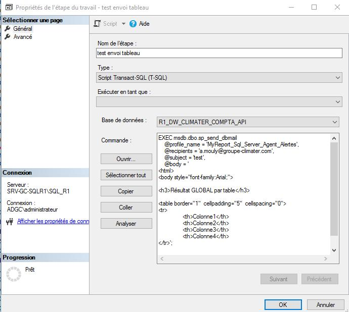

Contexte : Supervision automatisée de l'intégration nocturne des données financières des filiales.
Activité 3 : Supervision automatique des flux ETL nocturnes
Cahier des charges : Les traitements nocturnes (ETL) rapatrient les données comptables de plus de 40 filiales dans la base centralisée R1_DW_CLIMATER_COMPTA_API. En cas d'échec d'un flux, les rapports d'activité deviennent inexacts. L'objectif était de mettre en place une alerte quotidienne automatique informant l'équipe informatique dès qu'un dysfonctionnement survient.
Démarche et mode opératoire :
Développement d'un script de contrôle global affichant le statut de chaque brique applicative (Achats, Compta, Paye).
Développement d'un suivi détaillé identifiant la filiale exacte en anomalie (détection des volumes de lignes nuls et de la date du dernier transfert).
Optimisation des performances : regroupement de plus de 40 requêtes isolées en une requête unique optimisée à l'aide de jointures (LEFT JOIN et UNION ALL).
Planification de la tâche via SQL Server Agent et envoi automatique d'un rapport HTML par courriel chaque matin au moyen de la procédure sp_send_dbmail.
Captures de réalisation :

Figure 1 : Script PowerShell d'analyse et d'extraction du statut des flux ETL

Figure 2 : Tableau généré identifiant précisément les filiales en erreur d'intégration

Figure 3 : Tâche SQL Server Agent configurée pour l'envoi automatique des alertes par mail
-- Exemple d'exécution du composant sp_send_dbmail
EXEC msdb.dbo.sp_send_dbmail
@profile_name = 'MyReport_Sql_Server_Agent_Alertes',
@recipients = 'a.mouly@groupe-climater.com',
@subject = 'Alerte Supervision ETL - Statut des flux',
@body = '